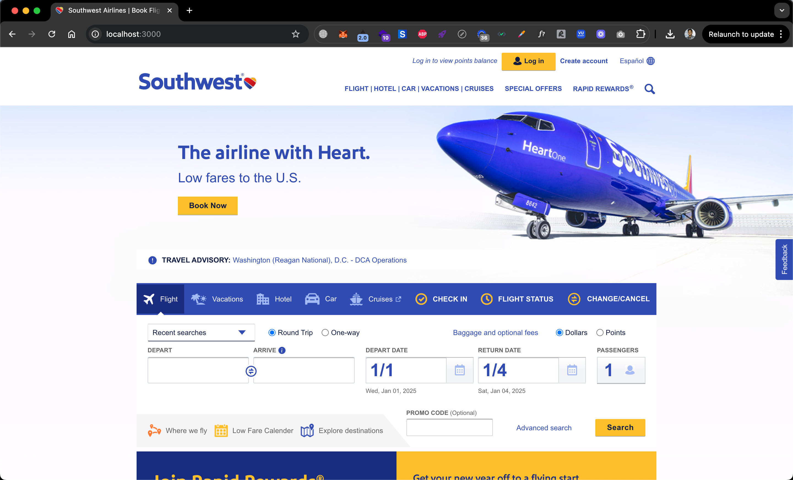
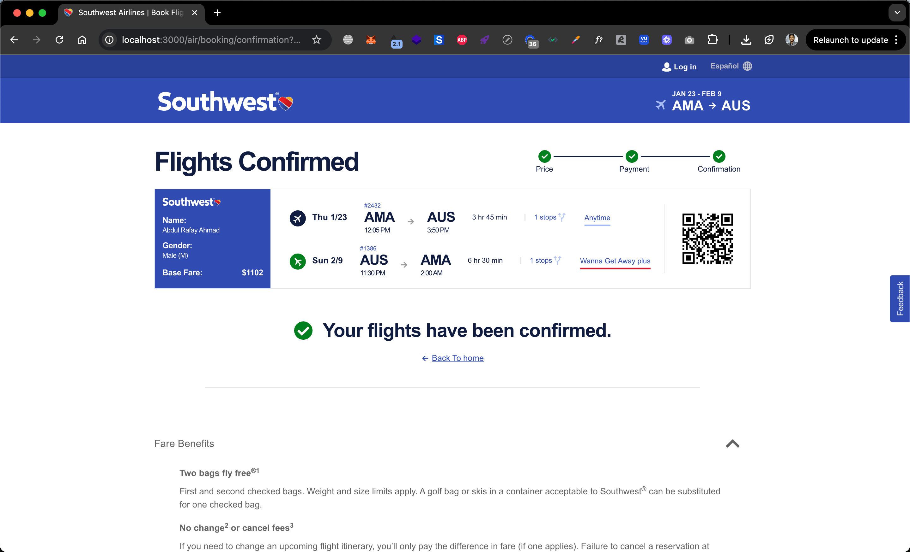
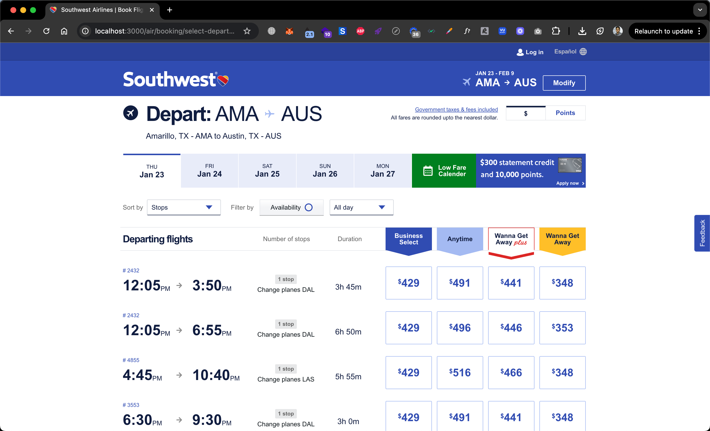
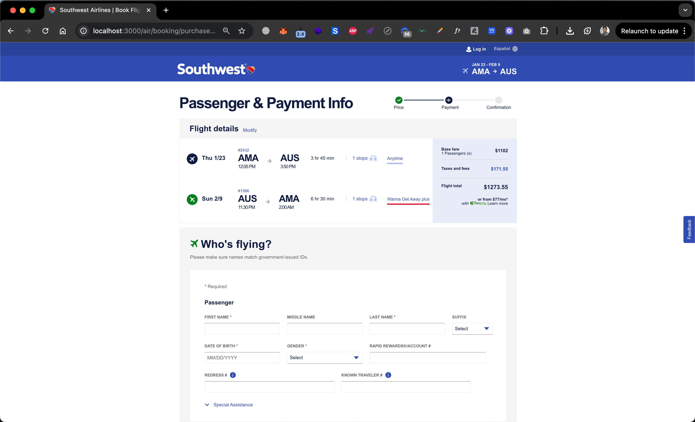
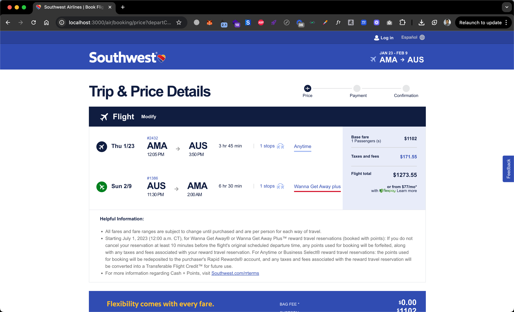

High-fidelity replica of southwest.com created as training data for AI models, featuring complete UI replication and interactive components.
This exact replica of Southwest Airlines website was created specifically to train machine learning models in web navigation patterns, UI element recognition, and user interaction simulation. The high-fidelity clone provides clean, structured data for AI training without legal or copyright concerns.





Create a pixel-perfect clone of southwest.com to serve as high-quality training data for machine learning models specializing in web interaction patterns and UI recognition.